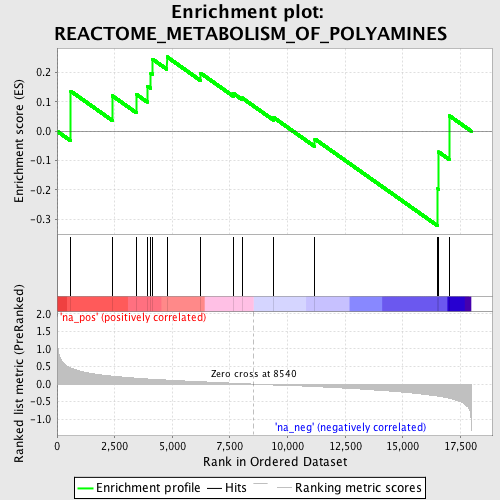
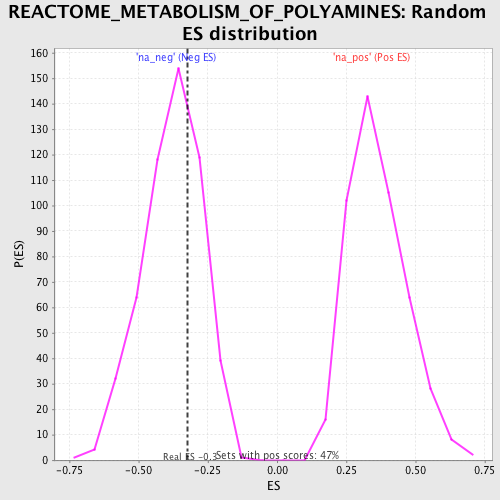

| | | Dataset | GSEA_Cushing_prerank_FC |
| Phenotype | NoPhenotypeAvailable |
| Upregulated in class | na_neg |
| GeneSet | REACTOME_METABOLISM_OF_POLYAMINES |
| Enrichment Score (ES) | -0.3237486 |
| Normalized Enrichment Score (NES) | -0.85710275 |
| Nominal p-value | 0.674812 |
| FDR q-value | 1.0 |
| FWER p-Value | 1.0 |
Table: GSEA Results Summary

Fig 1: Enrichment plot: REACTOME_METABOLISM_OF_POLYAMINES
Profile of the Running ES Score & Positions of GeneSet Members on the Rank Ordered List
| PROBE | GENE SYMBOL | GENE_TITLE | RANK IN GENE LIST | RANK METRIC SCORE | RUNNING ES | CORE ENRICHMENT | | 1 | SAT1 | | | 595 | 0.456 | 0.1367 | Yes |
| 2 | ADI1 | | | 2400 | 0.227 | 0.1209 | Yes |
| 3 | AGMAT | | | 3451 | 0.169 | 0.1253 | Yes |
| 4 | ODC1 | | | 3914 | 0.147 | 0.1544 | Yes |
| 5 | ENOPH1 | | | 4069 | 0.141 | 0.1985 | Yes |
| 6 | SMS | | | 4137 | 0.139 | 0.2464 | Yes |
| 7 | SRM | | | 4769 | 0.115 | 0.2541 | Yes |
| 8 | GOT1 | | | 6228 | 0.069 | 0.1985 | No |
| 9 | MTAP | | | 7648 | 0.026 | 0.1293 | No |
| 10 | APIP | | | 8028 | 0.015 | 0.1138 | No |
| 11 | AMD1 | | | 9403 | -0.025 | 0.0466 | No |
| 12 | PAOX | | | 11188 | -0.070 | -0.0267 | No |
| 13 | MRI1 | | | 16524 | -0.340 | -0.1971 | No |
| 14 | ADC | | | 16558 | -0.344 | -0.0708 | No |
| 15 | SMOX | | | 17033 | -0.402 | 0.0525 | No |
Table: GSEA details [plain text format]

Fig 2: REACTOME_METABOLISM_OF_POLYAMINES: Random ES distribution
Gene set null distribution of ES for REACTOME_METABOLISM_OF_POLYAMINES